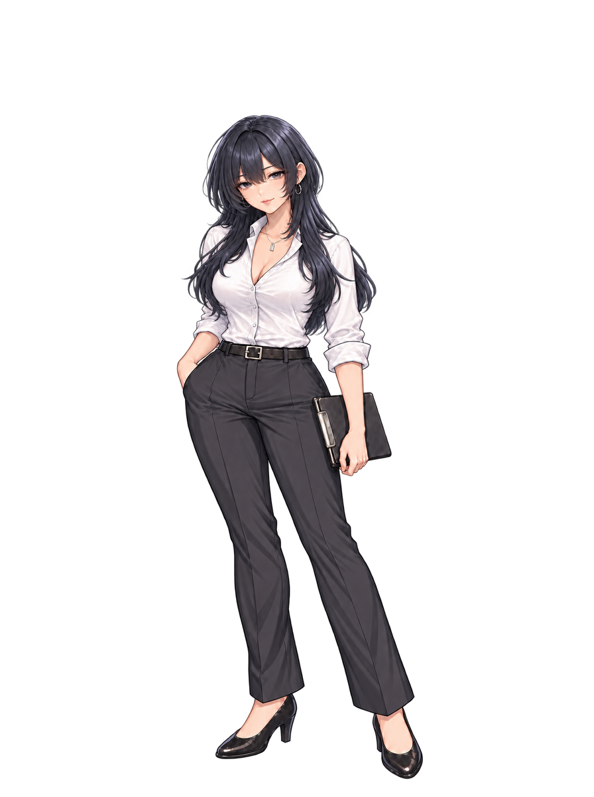
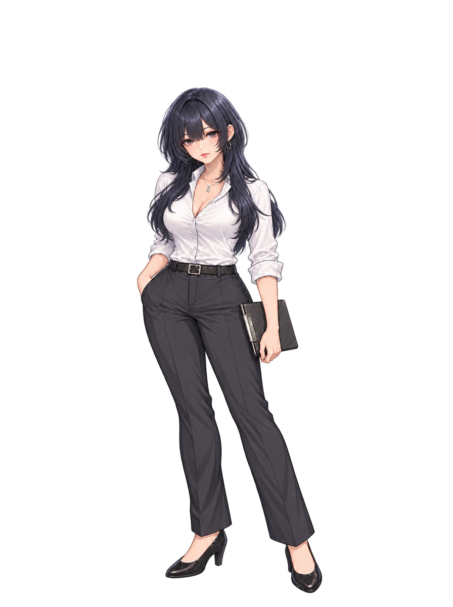
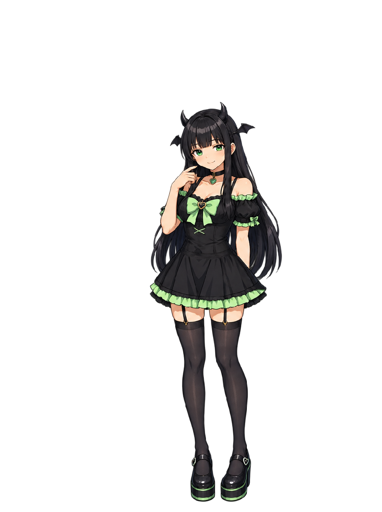
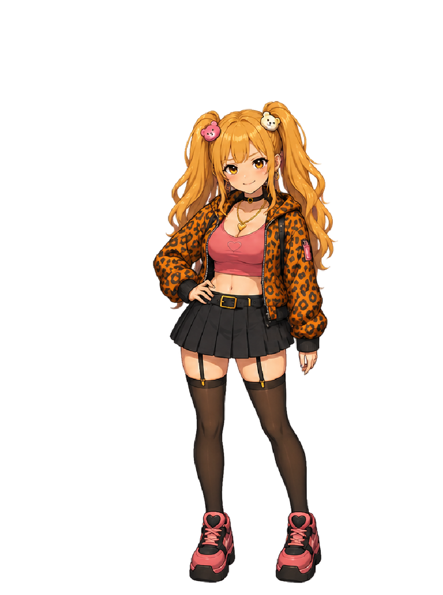
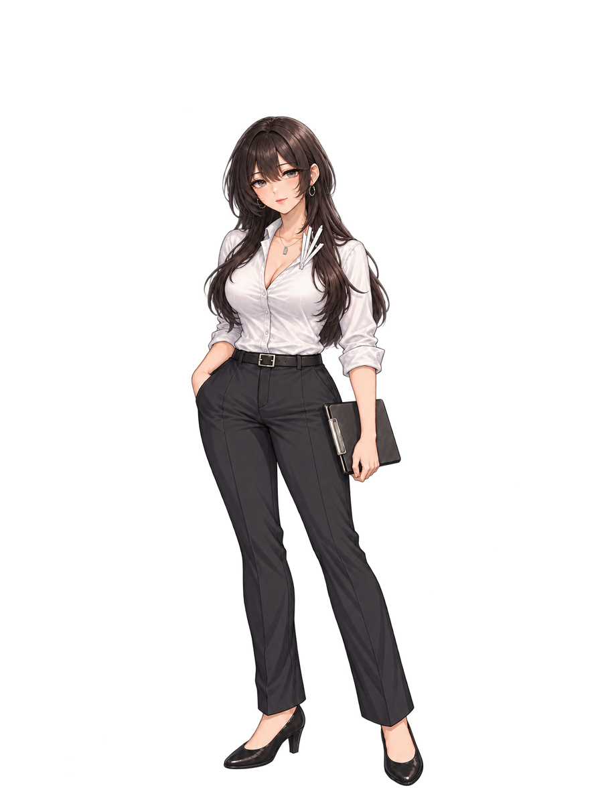
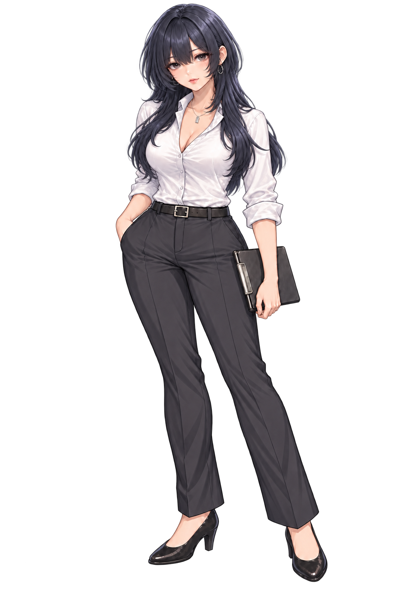

通常表情の新デザイン案v6・採用確認待ち
胸元の紙を外し、少し青みのある暗い髪色へ戻しました。写真の顔を拡大して目とまぶたを参照し、短めのロングと女性らしい体格を合わせた案です。
暗い背景 白い背景 · 生成元PNG · 生成記録 · 過去の全制作画像
上段は旧凛の全身高に合わせた比較用配置です。ゲーム素材の差し替えは採用後に行います。





原寸・1px＝1px 2倍・補間なし
